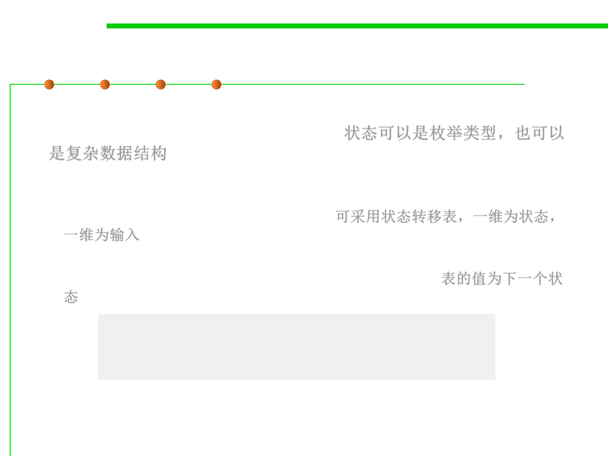

How to implement?
6.3 Maintainability-Oriented Construction Techniques
▪ The “state” variable can be a simple enum data type, but more
complex data structures may be used. 状态可以是枚举类型，也可以
是复杂数据结构
– A common technique is to create a state transition table, a two-
dimensional array comprising rows representing every possible state, and
columns representing input parameter. 可采用状态转移表，一维为状态，
一维为输入
– The value of the table where the row and column meet is the next state the
machine should transition to if both conditions are met. 表的值为下一个状
态
State transition[][] = {
{ State.Initial, State.Final, State.Error },
{ State.Final, State.Initial, State.Error }
};